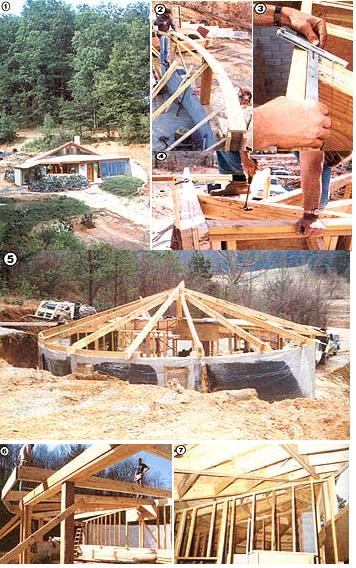

Is it possible to achieve food and energy independence on one acre? Well, with imagination, hard work, and the right one acre, we think it might be done . . . and that's what this protect is all about. Of course, providing most of the basic needs for four people from such a small piece of ground is a tall order. Still, we think it's a goal worth pursuing, and we hope that in this series of articles about our low-cost homestead we'll be able to help some of you in your struggles to increase your self-reliance . . . by doing some of the experimenting for you.
In our first installment, we discussed our plans for this project-which include our round, earth-sheltered home . . . an independent, low-voltage DC electrical system run from hydropower . . . and permaculture agricultural schemes-and described the construction methods used to raise the circular building's block walls. This time, we'll go into the intricacies of framing the domicile. (For readers unfamiliar with construction jargon, we've included a glossary of the terms marked with an asterisk.)
On most construction projects, it's a real milestone when you get to the point where you can have a sheltered work-and-storage area . . . particularly when you're working through the winter (as we were!). Yet before we could get a roof overhead, we had to begin the framing of the round earth-sheltered house by erecting the full-diameter, east-west partition. Because all of our building's rafters bear on this wall, its completion was the key to getting to work on the roof structure. And though the wall is a fairly standard 2 X 4, 16" on-center` partition-with openings left for the bedroom and bath doors-the job is complicated somewhat by the special reinforcement above the door headers and the 1-in-12 pitch* of the top plates* . Consequently, it's a good place to "get one's feet wet" with unsquare framing . . . and to learn some of the skills that will be important to the successful completion of this admittedly complicated stage of our house's construction.
Because the west top plate overhangs the exterior block wall, the main partition can't be framed on the floor and lifted into position, as is often done. Instead, we found it best to start by securing the sole plates to the concrete slab with expansion anchors or a nail gun, so that their centerline bisected the circle of the building. This left the north side of the east sole plate flush with the north side of the pilaster" on the bermed wall.
To match the top-plate pitch, the upper ends of the studs had to be cut at a 5 ° angle for a snug fit. (The calculated dimension of this angle is actually 4-3/4°, but the 5° approximation is plenty accurate.) We started the wall by anchoring the end studs to the concrete block and cutting one of the doubled top plates for each side to the appropriate length.
To support the top plates during framing, it's possible either to erect a temporary center pole as we did-or to prepare the rough opening* for the bathroom door. Because the building's center post bears on the bathroom-door header*, the structure above this opening must be somewhat reinforced. When we reached this stage, we set in a doubled 2 X 12 block to support the east top plate, and stiffened the whole assembly with I/2" plywood on both sides of the header box. In order to serve as a construction post, this rough opening should be put together on the floor, and the assembly should be lifted into position and propped. Then the plates can be nailed to the laminated 2 X 4 central post, the trimmers` from the door frame, and the 2 X 12 block.
The remainder of the framing consists of preparing two more reinforced door headers, where cross rafters tie into the bisecting wall, and filling in the 16" o.c. studs. Though it would be possible to calculate the length of each stud, it proved just as easy for us to cut them to fit. We simply laid each board up against the top plate, marked the cut with a pencil, set the trimmed stud in plumb, end-nailed it through the top plate, and toe-nailed it to the sole plate. After the wall was framed, we went back and added the second layer of top plate.
FRONT ROOF
We used homemade Hitch-plate (or "gluelam") beams for our rafters. Since they consist of a section of plywood sandwiched between two conventional boards (thereby adding the plywood's multidirectional strength to the more one-directional capability of the boards), they're quite strong. Such beams are approved for construction practically everywhere, but some building codes stipulate that they may be designed only by architects or engineers. Fortunately, we're without such restrictions, so we consulted load tables for Hitch-plate beams from Architectural Graphic Standards to determine an appropriate spacing for the rafters in our building. A good deal of conservatism is built into the tables, and we introduced a generous amount of our own by using 48" maximum spacing to allow for easy sheathing and drywalling.
Using glue and nails, we built up our Hitchplate beams from lengths of 2 X 10 secured around 3/4 ", or doubled 1/2 ", plywood cut to size. The main north-south beam on the front roof drops from the top of the east plate (over two jacks; in the central post) to a point just east of the front-door opening at a 1-in-12 pitch. This, and each of the other southwest rafters, was bird's-mouthed' approximately 3/4" deep and 8" wide where it rides on the sill. Once we got that initial beam in place, we removed our temporary bracing for the east-west bisecting wall to make the floor less cluttered.
Next, we prepared the cross rafter to which the three southwest jack rafters are attached. This was done by cutting out a section of 2 X 10, mitered` at both ends, long enough to penetrate the area above the west bedroom header and rest atop the 2 X 12 blocking. This board was notched to fit into the slot above the blocking. To this first cross rafter, we attached a ledger' strip cut from a piece of two-by lumber . . . then each jack rafter was notched to hang on this ledger.
All three jack rafters have different compound angles, requiring double cuts where they intersect the cross rafter. The additional notching needed to fit the ledger, however, increases the number of saw cuts on those ends to four. The portions of the jack rafters that overhang the exterior wall were then bird's-mouthed, the beams were set in place, and their inside ends were nailed through the cross rafter. When all three were in position, we added two more cross rafters for reinforcement, nailing them into the back of the first. Then we went ahead and installed some of the 2 X 10 bridging to keep the rafters square.
Each of the four rafters that span from the east bisecting wall top plate to the front of the building has a different pitch . . . and the result is that the roofline describes what is called a hyperbolic paraboloid as you move from the center to the southeast. Because all four of these rafters were to bear on the beam that would span the greenhouse opening, the next step in construction was to build up that beam from five 2 X 6's on edge, with 2 X 8's lying flat on the top and bottom. We used a pressure-treated 6 X 6 post in the center of the beam's span for support, and finished the horizontal member with rung oil to enhance its appearance.
Because the four southeast rafters bear flat (with appropriate bird's-mouths) on the east bisecting wall top plate, they arrive at the front wall tipped sideways at a 5° angle . . . representing the 1-in-12 east-west roof pitch. Consequently, the bird's-mouths where the rafters ride on the greenhouse beam had to be cut at compound angles, with the tipping-angle cut being more pronounced than the bird's mouths themselves. It's important to cut these compound angles into the ends bearing on the greenhouse beam, rather than the ends on the wall top plate, so that top and bottom surfaces of the rafters run parallel to the sheathing and interior finish materials.
Bridging these four rafters with 2 X 10's was a fairly time-consuming chore, since there were a number of different angles involved. For this job, our carpenters found a Squangle nearly indispensable. This tool, made by the Mayes Brothers Tool Manufacturing Company of Johnson City, Tennessee, allows one to accurately reproduce odd angles while maintaining plumb with a built-in bubble level.
Once we'd finished the bridging, we moved on to getting the front half of the roof overhead. On the southeast portion of the roof, full-width pieces of plywood could be used between the 4'-spaced rafters, but the area over the radial rafters on the southwest roof required a number of triangulated cuts. This proved to be a blessing in disguise, though, since we were able to find some salvaged plywood, which had been cut into parallelograms, for a very reasonable price. On our roof, working with the odd-shaped material was no disadvantage, and we saved at least $2.50 per sheet.
We used salvaged roll roofing (lapped 18" and sealed with cement) for the top layer, though we seriously considered using a sprayed-plastic coating suggested to us by architect Angus Macdonald. (See page 150 for more about Angus' work.) The roll roofing won out in the end, simply because it was so inexpensive . . . however, we had little doubt that the plastic would outlast it by a wide margin. An additional potential benefit to using the plastic is that polyurethane foam insulation can be sprayed on beneath it, thereby eliminating the need to install fiberglass insulation between rafters. Furthermore, the plastic can be continued on down earth-bermed walls as a structure's waterproofing, forming a continuous sheet over and around the building. In this aspect of construction, as in so many others, one must weigh savings against durability and the labor involved.
REAR ROOF
The northern section of roof has a 1-in-3 pitch, and all the rafters have the same bird's-mouth angles. Of course, the inner ends of three of them-the east, north, and west-are square-cut at an 18-1/2° angle, but the remainder intersect cross rafters in the same fashion as did those on the front roof. The first beam to install is the north-south peak rafter, which needs to be almost 23 Feet long. By this stage of construction, though, we'd run out of salvaged 2 X 10 X 24' boards, so we built the beam in two sections . . . and supported the adjoining ends on a post in the 2 X 6 plumbing wall between the bathroom and the bedroom closets. It would be preferable to run a continuous rafter here. Nonetheless, the support post should be retained, since this one rafter carries considerable load distributed from the other rafters that join it by way of the two cross rafters.
The remaining beams were cut and installed in much the same fashion as were those in the southwest rafter section . . . with a single cross rafter installed first, the jack rafters set in place (without a ledger, which is not needed on such a steep pitch) and end-nailed, and then the remaining layers of cross rafter backed against the first. There was even some duplication of cross rafter intersection cuts, since the angle of each northeast rafter matches that of one on the northwest.
Once the main rafters were up, we installed the bridging, leaving a 2" fire clearance where the chimney would penetrate the roof. And before sheathing the back roof section, we went ahead and laid up the chimney block (16" X 21" concrete units with 8" tile liners), so that the woodstove flue could be flashed properly when we installed the roofing.
The clerestory formed by the junction of the 1-in-3 rear roof pitch with the 1-in-12 front allows plenty of daylight to reach the bedrooms and bathroom. But to protect against summertime overheating, we decided to add an overhang (or eyelid, as we've anthropomorphically dubbed it). This projection consists of 2 X 10's angling out from the east and west rafters to form a point overhanging the center post.
Sheathing and sealing the rear roof went much the same as did that job on the front, except that-because of the steeper pitch-we had to maintain only a 12" overlap on the roll roofing. Still, we used plastic roofing cement liberally under the joints.
The partitions between the bathroom and the two bedrooms were fitted against the underside of the rafters, and each stud had to be cut to length and forced into place against its top plate to push that board up against the rafters. Because the top plates had to both bend and twist, it was important that the studs be cut to the right lengths and angles to insure a solid fit. This bit of framing turned out to be the trickiest-or at least most frustrating -part of the entire construction. It could have been made much simpler by running all interior walls on a radius of the circle . . . but unfortunately, the resulting rooms wouldn't work well with conventional rectilinear fixtures, such as a bathtub, washer-dryer, and so on.
As you can see, "drying in" this building required some creative construction techniques . . . but the resultant savings in materials were probably the essence of the building's low cost. In the next installment of this series we'll be able to detail the waterproofing and insulation measures, and move right along to some of the elegant finishing touches that you've seen in the pictures in this and the last issue of MOTHER. Be sure to be on hand for Part III . . . when you'll find out about our experimental waterproofing techniques.
EDITOR'S NOTE: By the time you read this, MOTHER's Plans staff will have finished a set of construction drawings covering the important aspects of building our $10-per-square-foot (or less!) earth-bermed house. The package will include framing and rafter details, block layout, plumbing and electrical lateral configuration, and even cross sections of cabinetry for the kitchen. Although these drawings are not architecturally approved plans, they do cover the structural aspects of construction in enough detail to help an owner-builder design his or her own code-approved blueprints. To obtain your set, send $15 (plus $1.00 shipping and handling) to MOTHER's Plans, Low-cost Earth Shelter, P.O. Box A, East Flat Rock, North Carolina 28726.
|
 1] Bird's-eye view of the low-cost earth shelter, near completion. [2] A curved top plate must be cut from 2 X 12 to go above the kitchen windows. [3] A Squangle in use. [4] Beams were end-nailed through the first cross rafter. [5] From behind the building, you can see the first layers of waterproofing. [6] Rafters in place above the bisecting wall. [7] The interior partitions must bend to fit the conical rear roof. |
|
|